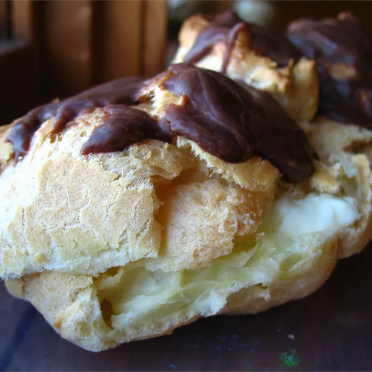

Almond Cream-Puff Ring

Description
A quick and easy recipe, almond cream-puff rings is an extremely delicious dessert. It should be made about 3 hours before servingn
Prep Time : 15 minutes
Cook Time : 40 minutes
Additional Time : 2 hours
Total Time : 2 hours 55 minutes
Servings : 10
Yield : 10 servings
Ingredients:
- 1 cup water
- 1/2 cup butter
- 1/4 teaspoon salt
- 1 cup all-purpose flour
- 4 eggs
- 1(3.4 ounce) package instant vanilla pudding mix
- 1 and 1/4 cups milk
- 1 cup heavy cream, whipped
- 1 teaspoon almond extract
- 1/2 cup semi-sweet chocolate chips
- 1 teaspoon butter
- 1 and 1/2 teaspoon milk
- 1 and 1/2 teaspoon light corn syrup
Steps
- Preheat oven to 400 degrees F (200 degrees C). Lightly grease and flour a cookie sheet, or use parchment paper. Using a dinner plate as a guide, trace a circle on the sheet.
- In 2 quart saucepan over medium heat, combine water, butter, and salt. Bring to a boil. With a wooden spoon, vigorously stir in flour all at once, until mixture forms a ball, and leaves the sides of the pan. Remove from heat, and beat in the eggs one at a time, until mixture is smooth. Drop batter into 10 mounds inside the circle traced on the cookie sheet, to form a ring.
- Bake in preheated oven for 40 minutes, or until golden brown. Turn off oven, leaving ring in for another 15 minutes. Remove from oven, and cool on wire rack. When cool, slice in half horizontally, and place bottom ring on serving plate. Spoon Almond Cream Filling on bottom ring, then replace top ring. Chill in refrigerator.
- To make Almond Cream Filling: Prepare pudding according to instructions on package, but use only 1 1/4 cups milk. Fold in whipped cream, and 1 teaspoon almond extract.
- To make Chocolate Glaze: In a double boiler over hot (not boiling) water, combine chocolate chips, 1 tablespoon butter, 1 1/2 teaspoons milk, and 1 1/2 teaspoons corn syrup. Heat until melted and smooth, stirring occasionally. Spoon over the top of chilled ring.